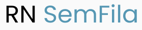

<!DOCTYPE html>
<html lang="pt-br">
<head>
    <meta charset="UTF-8">
    <meta name="viewport" content="width=device-width, initial-scale=1.0">
    <link rel ="stylesheet" href="../dist/output.css">
    <script src = "https://cdn.tailwindcss.com"></script>
    <link rel="preconnect" href="https://fonts.googleapis.com">
</head>
<body>
    <script type="module" src="https://unpkg.com/ionicons@7.1.0/dist/ionicons/ionicons.esm.js"></script>
    <script nomodule src="https://unpkg.com/ionicons@7.1.0/dist/ionicons/ionicons.js"></script>
</body>
<header class="bg-white"> 
    <nav class="pt-4 flex justify-between items center w-[92%] mx-auto">
        <div>
            
        </div>
        <div class="nav-links hidden md:block duration:500 md:static absolute bg-white md:min-h-fit min-h-[60vh] left-0 top-[9%] md:w-auto w-full flex-items-center px-5">
            <ul class="flex md:flex-row flex-col md:items-center md:gap-[4vw] gap-8">
                <li>
                    <a class ="hover:text-gray-500" href="#">Inicio</a>
                </li>
                    
                <li>
                    <a class ="hover:text-gray-500" href="#">Sobre</a>
                </li>

                <li>
                    <a class ="hover:text-gray-500" href="#">Nossos serviços</a>
                </li>

                <li>
                    <a class ="hover:text-gray-500" href="#">Contato</a>
                </li>

            </ul>
        </div>

        <div class="flex items-center gap-6">
            <button class="bg-[#FAD55C] text-black px-5 py-2 rounded-md hover:bg-[#87acec]">Entrar</button>
            <ion-icon onclick="onToggleMenu(this)" name= "menu" class="text-3xl cursor-pointer md:hidden"></ion-icon>
        </div>
    </nav>
</header>

<script>
    const navLinks = document.querySelector('.nav-links')
    function onToggleMenu(e) {
        e.name= e.name === 'menu' ? 'close' : 'menu'
        navLinks.classList.toggle('hidden')
    }
</script>
</html>